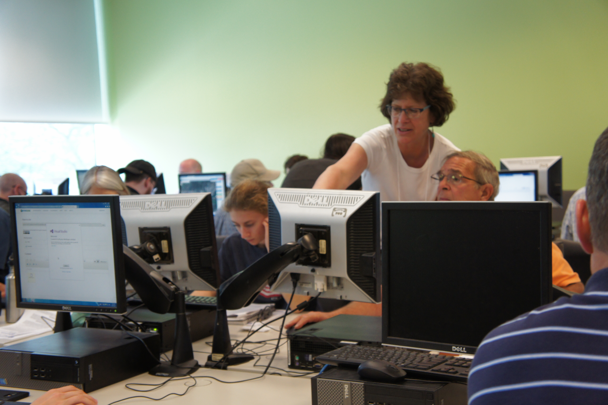

UNIVERSITY PARK, Pa. — It’s been a decade since the start of the Marcellus Shale gas boom in Pennsylvania, and today more than 10,000 unconventional gas wells dot the state’s hills and valleys.
The industry’s rapid development created economic opportunities for many, but also brought environmental concerns, and sometimes led to contentious conversations.
A team of researchers studying water quality around hydraulic fracturing, the process used to extract gas from rock deep underground, have found a blueprint to move those conversations forward.
Shale Network has for the past six years fostered a dialogue about shale drilling between concerned citizens, watershed groups, government regulators and personnel from large energy companies by focusing on publicly available water quality data.
An annual workshop hosted at the University Park campus gives people a chance to come together, learn about the latest water quality research and data, and talk about ways to move forward together.
“I don’t believe that anyone else was able to bring such a diverse group of people together to discuss this extremely complex problem from their unique perspectives but with a common goal to jointly advance the understanding of this problem and rationally discuss possible ways forward,” said Radisav Vidic, a professor of environmental engineering at the University of Pittsburgh and Shale Network member.
A shared interest in gathering, discussing and improving water quality data among diverse groups can lead to productive conversations that data alone cannot address, the scientists reported in an article published in the journal Science.
“We’ve been trying to figure out how to pull people together and look at numbers to understand impacts,” said Susan Brantley, distinguished professor of geosciences and director of the Earth and Environmental Systems Institute at Penn State. “That can lead to better decisions.
“That’s really what Shale Network is all about,” said Brantley, who is lead investigator of the group. “We want to help everyone understand what the numbers — in this case water chemistry numbers — mean related to shale gas development.”
For the past six years, Shale Network researchers have collected and published water quality data online. Their database contains more than a million pieces of data from 28,000 locations across the state, some never available before. The Consortium of Universities for the Advancement of Hydrologic Science (CUAHSI) hosts the public database with funding from the National Science Foundation (NSF).
“We have all these data points that are starting to be at our fingertips, and we have computational tools to work with the data,” Brantley said. “Yet, the numbers don’t mean anything unless you are working together. Not just with geologists or geochemists, but people who live in the area the data comes from. You need that collaboration to understand what the numbers mean. Local community members teach us about their landscapes and their needs.”
Brantley said people know what is happening in their backyards. Watershed groups near Pittsburgh, for instance, know to look out for discharge from old coal mines, which wouldn’t be a factor in other parts of the state.
The database has proven useful, but even more important has been the process of building it, the researchers said in the paper. Collaborations between diverse stakeholders have helped forge a social network with diverse perspectives and concerns.
“We may have developed a blueprint for how to engage different stakeholders and develop a commonality of purpose even in something as controversial and complicated as unconventional gas extraction,” Vidic said. “Perhaps this blueprint can be applied for the same problem elsewhere in the world or for other complex problems.”
Shale Network researchers act as honest brokers in discussions like those that take place at the group’s annual workshops.
“We are not trying to prove fracking is bad,” Brantley said. “We are not trying to prove water quality is perfect. We are trying to look at what the water chemistry looks like in the areas where fracking is occurring and help all kinds of people talk about that together.”
Co-authors include Kathryn Brasier, associate professor of rural sociology, Dave Yoxtheimer, EESI research assistant, and Tao Wen, a post-doctoral scholar, all at Penn State; and Candie Wilderman, professor at Dickinson College.
Founded in 2010 with NSF funding, the Shale Network is a collaborative effort between Penn State, the University of Pittsburgh, Dickinson College and CUAHSI to collect and analyze data on water quality in the Marcellus Shale drilling region.
Please read details on the PSU News